생물분류기사(동물) (2021-09-12 기출문제)
1과목: 계통분류학
1. 분류군(taxon)에 해당되지 않는 것은?
- 무미목
- 양서강
- 척추동물아문
- 실험실의 개구리들
(정답률: 알수없음)

2. 원저자는 신종 기재 시 완모식을 지정하고 공인된 전문 학술지에 공표해야 하는데 그 자료에 대한 설명으로 맞지 않는 것은?
- 모식표본의 라벨에 기입된 정보도 기록한다.
- 숙주의 종명은 매우 중요한 자료가 된다.
- 유충이나 유생 또는 연령 등의 발생단계를 기록한다.
- 표본이 채집된 해발고도 및 심도를 기록하지만 화석의 경우에는 발견된 지층은 중요하지 않다.
(정답률: 알수없음)
3. 화식(floral formula)의 설명으로 옳은 것은?
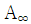
: 수술의 수가 많음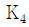
: 꽃잎의 수는 4개임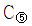
: 꽃받침잎은 5개로 합생함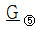
: 자방은 하위이며 5개의 심피가 합생함
(정답률: 알수없음)
4. 물속에서 사는 고착성 여과섭식자이며 스폰지(sponge)라고도 하는 동물은?
- 선형동물
- 온형동물
- 자포동물
- 해면동물
(정답률: 알수없음)
5. 환형동물 중 다모강(Class Polychaeta)에 관한 설명과 관계가 없는 것은?
- 등부의 체절 좌우에는 측각이 있다.
- 보통 암수딴몸이고, 야생생식을 하는 것도 있다.
- 다모강은 극질목, 문질목, 악질목으로 나뉜다.
- 유생의 배설기는 원신관이지만, 성체는 보통 후신관이다.
(정답률: 알수없음)
6. 다음 중 성적이형(sexual dimorphism)을 가장 옳게 설명한 것은?
- 암수가 생식기 이외에도 서로 다른 특징을 가지는 것을 말한다.
- 수컷이 암컷보다 크기(덩치)가 큰 특징을 말한다.
- 암수가 생식기에 대해 서로 다른 특징을 가지는 것을 말한다.
- 교배에 있어서 암컷의 선택권이 수컷보다 더 큰 것을 말한다.
(정답률: 알수없음)
7. 후구동물(Deuterostomial)에 해당하는 것은?
- 연두끈벌레
- 다슬기
- 플라나리아
- 가는발깃갯고사리
(정답률: 알수없음)
8. 우수 2회 우상복엽(even-bipimnate leaf)은?
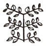
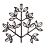
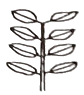
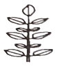
(정답률: 알수없음)
9. 다윈의 진화론에 담긴 내용과 관계가 가장 거리가 먼 것은?
- 과잉번식
- 돌연변이
- 자연선택
- 집단 내 개체간의 변이
(정답률: 알수없음)
10. 분류학자들의 첫 과제는 눈앞에 있는 다양한 개체들을 인식하여 제각기 같은 모양의 군으로 나누고, 군 사이의 일정한 차이를 알아내는 일이다. 눈앞의 개체들이란 보통 연구자가 직접 채집하였거나 다른 사람이 채집한 표본을 말한다. 연구자는 이 표본 중에서 표현형적으로 같은 것까지 모으고 다른 것과 구분하는데, 표현형적으로 같은 것을 나타내는 용어는?
- 과(family)
- 페논(phenon)
- 카테고리(category)
- 분류군(taxon)
(정답률: 알수없음)
11. 마이어가 제시한 다음이 설명하고 있는 것은?
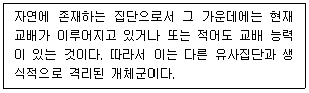
- 속(genus)
- 종(species)
- 변종(variety)
- 지역 개체군(localpopulation)
(정답률: 70%)
12. 자웅이주가 아닌 식물은?
- 소철
- 매자나무
- 버드나무
- 은행나무
(정답률: 알수없음)
13. 박벽포자낭을 갖는 양치식물은?
- 속새
- 음양고비
- 석송
- 물부추
(정답률: 알수없음)
14. 윤형동물(Rotifera)의 특징으로 옳지 않은 것은?
- 의체강동물이다.
- 배설계는 원신관이다.
- 인두에 저작기가 있다.
- 이배엽성이며, 몸의 앞쪽에는 발달된 촉수가 있다.
(정답률: 알수없음)
15. 획득형질의 유전이 진화의 주요인이라고 최초로 주장한 학자는?
- 린네(Linne)
- 다윈(Darwin)
- 월레스(Wallace)
- 라마르크(Lamarck)
(정답률: 알수없음)
16. 육상식물은 보다 건조한 환경에서 생활하게 됨에 따라 수정을 하는데 있어 더 이상 물에 의존할 수 없게 되었다. 나자식물은 이러한 문제점을 다음 중 어떠한 방법에 의해 해결하게 되었는가?
- 중복 수정
- 유관속 조직 분화
- 화분(꽃가루)을 형성
- 운동성 있는 정자를 형성
(정답률: 알수없음)
17. 다음 중 동물의 유생의 이름이 아닌 것은?
- echiura
- planula
- nauplius
- trochophora
(정답률: 30%)
18. 동물의 각 범주에 배치되는 분류군에는 학명이 주어진다. 다음 중 “과(family)”의 어미가 바르게 표기된 것은?
- Hominini
- Homininae
- Hominidae
- Hominoidea
(정답률: 알수없음)
19. 종의 학명(scientific name)의 표기가 바르게 된 것은?
- Homo Sapiens
- homo Sapiens
- Homo sapiens
- homo sapiens
(정답률: 알수없음)
20. 다음 중 촉수담륜동물-탈피동물-후구동물의 순서로 옳게 나열된 것은?
- 해면동물-절지동물-극피동물
- 자포동물-선형동물-척삭동물
- 연체동물-유조동물-척삭동물
- 완보동물-환형동물-모악동물
(정답률: 알수없음)
2과목: 환경생태학
21. 대장균(E. coli)과 같이 소수의 세균을 영양분이 풍부한 실험실 배양배지에서 배양했을 때 처음 24시간 동안 관찰되는 생장곡선으로 가장 적합한 것은?
- 직선증가 곡선
- S형 곡선
- J형 곡선
- R형 곡선
(정답률: 알수없음)
22. 다음은 툰드라의 식생형에 관한 설명이다. ( ) 안에 가장 적합한 것은?
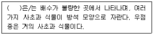
- 방석형
- 덤불형
- 광엽초본형
- 협엽초본형
(정답률: 알수없음)
23. 그림과 같이 생태계 발달 모형에 따라 두 가지의 생태계에 대해 성장(생산)과 유지(호흡)는 어떻게 달라지는지 ⓐ~ⓓ를 옳게 설명한 것은?
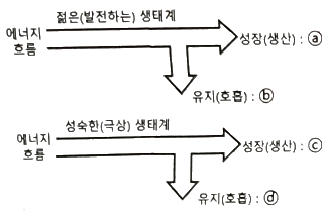
- ⓐ : 크다, ⓑ : 작다,
ⓒ : 작거나 없다, ⓓ : 크다. - ⓐ : 작거나 없다, ⓑ : 크다,
ⓒ : 작거나 없다, ⓓ : 크다. - ⓐ : 크다, ⓑ : 작다,
ⓒ : 크다, ⓓ : 작다. - ⓐ : 작거나 없다, ⓑ : 크다,
ⓒ : 크다, ⓓ : 작다.
(정답률: 알수없음)
24. 바다의 적조현상과 관계없는 것은?
- 해수의 부영양화
- 수중 산소량의 증가
- 플랑크톤의 대발생
- 어패류의 대량 사멸
(정답률: 알수없음)
25. 생태계를 구성하는 비생물적 환경요인이 아닌 것은?
- 공기
- 암석
- 물
- 분해자
(정답률: 알수없음)
26. 농경생태계에 관한 설명으로 옳지 않은 것은?
- 자연생태계와 인공생태계의 중간형태이다.
- 생산성을 높이는 보조에너지원은 자연에너지라기 보단 가공된 연료이다.
- 종속영양적인 특성을 가진다.
- 종다양성은 인간의 관리로 인하여 감소한다.
(정답률: 알수없음)
27. 생태계에서 생물체의 사체를 무기염류로 환경에 다시 돌려주는 역할을 하는 생물군은?
- 독립영양자
- 분해자
- 생산자
- 거대소비자
(정답률: 알수없음)
28. 다음은 용어에 관한 설명이다. ( )안에 공통으로 들어갈 가장 적합한 것은?
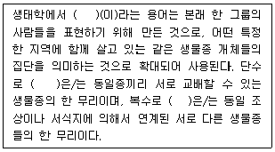
- boundary
- population
- community
- biome
(정답률: 50%)
29. 생태계에서 먹이 연쇄는 생산자 → 1차 소비자 → 2차 소비자 → 최종 소비자로 이어진다. 이러한 먹이 전달 과정의 각 단계가 높아짐에 따라 일반적으로 생물체에 나타나는 경향에 대한 설명으로 옳은 것은?
- 몸집이 커지나 개체수는 줄어든다.
- 몸집이 커지고 개체수가 늘어난다.
- 몸집이 작아지고 개체수가 줄어든다.
- 몸집이 작아지나 개체수는 늘어난다.
(정답률: 알수없음)
30. 다음 중 생물종간 상호작용의 형태가 잘못 설명된 것은?
- 경쟁 : 종A는 B개체군과 협력관계에 있다.
- 기생 : 종A는 B개체군을 공격하면서 그에 의존한다.
- 원시협동 : 종A와 B개체군과의 상호작용이 생존에 이익이 되나 상호작용 없이도 살 수 있다.
- 포식 : 종A는 B개체군을 먹이로 취한다. 따라서 B개체군은 직접적인 피해를 입는다.
(정답률: 알수없음)
31. 다음이 설명하는 생물군계는?
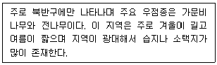
- 타이가(Taiga)
- 툰드라(Tundra)
- 열대사바나(Tropical Savanna)
- 드럼린(drumlin)
(정답률: 30%)
32. 용승 현상(upwelling)에 관한 설명으로 가장 적합한 것은?
- 적도부근의 플랑크톤이 풍부한 해류가 고위도 해역으로 올라간다.
- 해안가에서 지속적으로 침전된 영양소가 연안풍에 의해 바다로 공급되는 현상이다.
- 계절과 상관없이 발생한다.
- 영양소가 풍부한 차가운 심층수가 수면으로 올라온다.
(정답률: 알수없음)
33. 교목이 포함된 천이계열의 경우, 천이의 초기단계에서 침입하게 되는 목본식물의 일반적인 특징에 대한 설명으로 가장 거리가 먼 것은?
- 키가 작고 굵다.
- 잎 수가 많다.
- 잎의 크기가 작다.
- 생장이 빠르다.
(정답률: 알수없음)
34. 유입생태계(receiving ecosystem)에서 부영양화의 영향이 아닌 것은?
- 종다양성의 감소와 우점종의 변화
- 식물과 동물 생물량의 감소
- 탁도의 증가
- 무산소 조건의 발달
(정답률: 10%)
35. 도시의 대기적 특성으로 인해 주변 전원 지역보다 도시지역의 온도가 보통 1~4℃ 더 높게 나타나는 현상을 무엇이라 하는가?
- 온실 현상
- 열섬 현상
- 집중 현상
- 대류 현상
(정답률: 알수없음)
36. 다음은 암모니아성 질소의 질산화 과정이다. 각 과정에서 관여하는 세균에 대해 ( ) 안에 알맞은 것은?
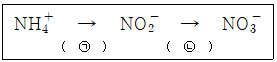
- ㉠ Pseudomonas, ㉡ Bacillus
- ㉠ Bacillus, ㉡ Pseudomonas
- ㉠ Nitrosomonas, ㉡ Nitrobacter
- ㉠ Nitrobacter, ㉡ Nitrosomonas
(정답률: 알수없음)
37. 다음 ( ) 안에 들어갈 가장 알맞은 용어는?
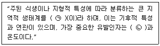
- ㉠ 군집, ㉡ 영양분
- ㉠ 군집, ㉡ 강우량
- ㉠ 생물군계, ㉡ 영양분
- ㉠ 생물군계, ㉡ 강우량
(정답률: 알수없음)
38. 다음은 무엇을 설명한 것인가?
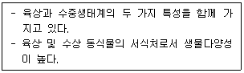
- 유수생태계
- 정수생태계
- 해양생태계
- 습지생태계
(정답률: 알수없음)
39. 허치슨이 제안한 개념으로 경쟁, 포식, 질병, 기생과 같은 생물적 상호작용에 의해 제한되는 분포를 갖는 종의 생태적 지위를 나타내는 용어는?
- 기본적인 생태적 지위(fundamental niche)
- 실제 생태적 지위(realized niche)
- 공간적인 생태적 지위(spatial niche)
- 영양의 생태적 지위(trophic niche)
(정답률: 알수없음)
40. 다음 중 생태계 구성인자의 연결로 옳지 않은 것은?
- 생산자 - 독립영양생물
- 1차 소비자 - 종속영양생물
- 동물 - 종속영양생물
- 분해자 – 독립영양생물
(정답률: 알수없음)
3과목: 형태학
41. 식물의 지상부(shoot)에 있는 눈(bud)으로부터 새로 생길 수 있는 기관에 대한 설명으로 옳은 것은?
- 잎, 가지(작은 줄기) 또는 꽃이 될 수 있다.
- 가지(작은 줄기)와 꽃은 될 수 있어도 잎은 될 수 없다.
- 꽃과 잎은 될 수 있어도 가지(작은 줄기)는 될 수 없다.
- 꽃만 될 수 있으며 가지(작은 줄기)와 잎은 될 수 없다.
(정답률: 알수없음)
42. 분열조직이 식물체 부위의 어디에 위치하는가에 따라 분류된다고 할 때 이 기준에 따른 조직이 아닌 것은?
- 절간분열조직(intercalary meristem)
- 기부분열조직(basal meristem)
- 액생분열조직(axillary meristem)
- 기본분열조직(ground meristem)
(정답률: 알수없음)
43. 신경계의 기능단위인 뉴런을 구성하는 4가지 부위가 아닌 것은?
- 세포체(cell body)
- 수상돌기(dendrite)
- 축삭(axon)
- 신경절(ganglium)
(정답률: 알수없음)
44. 극피동물이 가지고 있는 내골격은 무엇인가?
- 큐티클
- 연골
- 소골편
- 유체골격
(정답률: 알수없음)
45. 다음 기생충 중 편형동물에 속하는 것은?
- 말라리아원충
- 편충
- 회충
- 촌충
(정답률: 알수없음)
46. 갑상샘(갑상선, thyroid gland)에 관한 설명으로 옳지 않은 것은?
- 갑상샘은 척추동물에만 존재하는 기관이기 때문에 척삭과 함께 척추동물의 대표적인 기관으로 볼 수 있다.
- 어류의 갑상샘의 대부분은 쌍을 이루고 있으며, 경골어류의 경우 보통 2쌍이 첫째 인두궁인 턱궁부근에 있다.
- 조류는 기관 분기부에 1쌍의 갑상샘을 가지고 있다.
- 사람의 갑상샘은 갑상연골 아래부분과 기관 위부분에 걸쳐 왼·오른엽이 갑상샘 좁은부분에 의해 U자 또는 H자 모양으로 붙어 있다.
(정답률: 알수없음)
47. 식물의 체관부를 구성하는 세포 중 식물체의 기계적 지지를 주요 기능으로 하는 세포가 아닌 것은?
- 동반세포(companion cell)
- 후각세포(sclerenchyma cell)
- 섬유세포(fibers)
- 보강세포(sclereids)
(정답률: 알수없음)
48. 꽃 구조의 특수화(진화) 경향에 대한 일반적인 설명으로 옳지 않은 것은?
- 씨방의 위치는 하위에서 상위로 변화된다.
- 양성화에서 단성화로 더 특수화된다.
- 꽃의 축이 짧아지면서 나선상으로 배열되었던 꽃 부분들이 윤생 배열로 변화된다.
- 꽃 구조의 네 가지 꽃부분(심피, 수술, 꽃잎, 꽃받침잎 등)의 수가 각각 많은 꽃으로부터 적은 꽃으로 변화된다.
(정답률: 알수없음)
49. 단심피로 되어 있고 성숙하면 1개의 봉선에 따라 열 개하며 1개의 심피 내의 복수의 종자가 들어 있는 열매의 유형은?
- 골돌과(follicle)
- 협과(legume)
- 삭과(capsule)
- 수과(achene)
(정답률: 알수없음)
50. 다음 중 메뚜기목에 속하지 않는 것은?
- 베짱이
- 방아깨비
- 사마귀
- 풀무치
(정답률: 알수없음)
51. 다음 괄호 안에 들어갈 말로 옳은 것은?
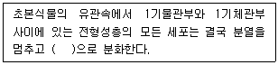
- 수분열조직
- 정단분열조직
- 후벽조직
- 통도조직
(정답률: 20%)
52. 치아(teeth)에 관한 설명으로 옳지 않은 것은?
- 원구류의 일종인 칠성장어는 골질(bony)치아를 가지고, 대부분의 척추동물은 각질(horny)치아를 가진다.
- 일부 두꺼비, 거북이 등은 치아가 없다.
- 진골어류의 치아는 턱뼈의 바깥쪽이나 정상에 붙어있는 단생치아(acrodont)를 가진다.
- 물고기나 양서류같은 하등 척추동물은 모든 치아가 동일한 동형치아(homodont)를 가진다.
(정답률: 알수없음)
53. 다음 기관 중 줄기의 변형이 아닌 것은?
- 백합의 다육성 안경
- 고구마
- 감자
- 딸기의 포복경
(정답률: 알수없음)
54. 외떡잎식물인 옥수수가 발아하면 맨 처음 나오는 구조는?
- 부정근(adventitous root)
- 유근(radicle)
- 떡잎(cotyledon)
- 자엽초(coleptile)
(정답률: 알수없음)
55. 연체동물의 일반적인 형태적 특징에 관한 설명으로 옳지 않은 것은?
- 가스교환은 아가미, 폐, 외투막 또는 체표에서 이루어진다.
- 체강은 퇴화하여 심장 주위에 국한된다.
- 나선형 난할을 하며, 담륜자 유생을 지닌다.
- 몸은 비슷한 형태의 체절로 구성되어 있다.
(정답률: 알수없음)
56. 다음 중 척삭동물이 대부분 공통적으로 가지는 특징에 관한 설명으로 옳지 않은 것은?
- 배 쪽에 심장(heart)이 있다.
- 항문 뒤까지 뻗어 있는 꼬리(tail)가 있다.
- 등 쪽에 속이 찬 신경삭(nerve cord)을 가지고 있다.
- 지지용 막대 역할을 하는 등 쪽의 척삭(notochord)이 있다.
(정답률: 알수없음)
57. 동물계의 분류기준에서 동물체의 어떤 단면이나 체축(body axis)을 중심으로 나눌 경우 동일한 형태로 두 조각 또는 그 이상의 조각으로 나누어지는 것을 무엇이라 하는가?
- 분할성
- 정합성
- 특이성
- 대칭성
(정답률: 알수없음)
58. 다음 중 자웅이주의 설명으로 올바른 것은?
- 한 식물체에 소포자와 대포자가 별도로 형성되는 것
- 수술이나 암술만 있는 꽃
- 암그루와 수그루가 별도로 있는 것
- 암꽃과 수꽃이 구분되는 것
(정답률: 알수없음)
59. 다음 중 식물의 기본분열조직(ground meristem)이 분화되어 만들어지는 것은?
- guard cell
- parenchyma
- root hair
- xylem
(정답률: 알수없음)
60. 다음 중 무성생식의 방법에 포함되지 않는 것은?
- 출아
- 재생
- 체외수정
- 단위생식
(정답률: 알수없음)
4과목: 보존 및 자원생물학
61. 다음 중 보전생물학의 중추를 이루는 분야(학문)와 가장 거리가 먼 것은?
- genetics
- taxonomy
- ecology
- physics
(정답률: 알수없음)
62. 100m × 100m 면적의 서식지에 가장자리 효과가 10m씩 나타날 경우 조류의 서식가능면적은?
- 6400m2
- 7225m2
- 8100m2
- 9025m2
(정답률: 알수없음)
63. 훼손된 생태계를 되살리는데 있어서 다음은 어떠한 방법을 사용한 것인가?
- 방치
- 회복
- 대체
- 유출
(정답률: 30%)
64. 식물보전센터에서 위험종의 유전변이 보존을 위한 표본 추출지침 중 종의 수준에서 수집하고자 할 때 우선적으로 수집하여야 할 종으로 가장 거리가 먼 것은?
- 절멸의 위험이 있는 종
- 특정 군집에서의 우점종
- 자연으로 재도입될 수 있는 종
- 진화적 및 분류학적으로 유일한 종
(정답률: 알수없음)
65. 생물다양성을 보존하기 위한 국제적인 노력과 가장 관계가 먼 것은?
- Ramsar Convention
- Conventionon Biological Diversity
- Rotterdam Convention
- Global Biodiversity Strategy
(정답률: 30%)
66. 보전생물학에 대한 설명으로 가장 거리가 먼 것은?
- 종, 군집, 생태계에 대한 인간 활동을 명확히 이해하는 것이다.
- 경제적인 요인과 단기간에 걸친 생물보호가 기본 관심사이다.
- 생물다양성 붕괴의 위협에 대응하여 발전한 종합적인 과학이다.
- 절멸의 위험에 처해 있는 종들을 생태계에서 기능을 발휘할 수 있도록 재건하는 것이다.
(정답률: 알수없음)
67. 보전(conservation)과 보존(preservation)은 생물다양성 유지와 자연자원 관리 등의 행위에 있어 가장 근간이 되는 개념들이다. 다음 중 보전(conservation)에 관한 가장 적합한 설명은?
- 자연 자원의 계획적인 관리를 통해 자연적인 안정성과 현재의 여건에서 진화적인 변화를 유지하기 위한 행위
- 자연 자원에 대한 계획적 관리를 전제로 하되 특정개체, 집단 등의 구체적인 대상에 대한 행위
- 적응력이나 질병에 대한 내성 등과 같은 특정한 형질을 대상으로 하여 이를 유지 관리하는 행위
- 희귀종을 존속시키기 위해서 행해지는 도입, 또는 인공수정 등과 같은 인위적인 관리를 위한 일련의 행위
(정답률: 알수없음)
68. 생물다양성을 보호하기 위해 보호지구를 기획하는데 그 방버으로 적절하지 않는 것은?
- 생태통로를 만든다.
- 보호지구 크기를 넓게 한다.
- 보호지구의 모양은 길쭉하게 한다.
- 여러 보호지구가 있는 경우 서로 가까이 붙어있게 한다.
(정답률: 알수없음)
69. 핵심종(중추종, keystone species)을 구분해 내는 것은 보전생물학적 측면에서 여러 가지 중요성을 지니는데, 이 핵심종에 관한 설명으로 가장 거리가 먼 것은?
- 핵심종의 멸종은 연쇄적으로 여러 다른 종의 소멸과 연계되어 있다.
- 생태계 내에서 어느 특정 종의 보호를 위해서는 그와 연관된 핵심종의 보호가 동시에 필요하다.
- 핵심종의 제거에 따라 연쇄절멸(extinction cascade)이 일어난다 해도 핵심종을 복원할 경우 생물군집이 원래의 상태로 반드시 복원된다.
- 핵심종이 제거되면 생태계의 거의 모든 영양 단계에서 생물다양성이 감소되어 궁극적으로 생태계가 붕괴될 수 있다.
(정답률: 알수없음)
70. 생물의 다양성을 위협하는 인간 활동의 주요 요인으로 거리가 먼 것은?
- 종간 경쟁
- 서식지 단편화
- 외래종의 침입
- 질병의 확산
(정답률: 50%)
71. 우리나라 하천 생태계에서 생물다양성 감소의 직접적인 원인과 가장 거리가 먼 것은?
- 골재 채취
- 유역의 교란
- 댐, 교랭 건설 기술의 발전
- 유해 독극물이나 기름 유출 등 화학적 요인
(정답률: 알수없음)
72. 어류 개체군 조절에 의한 훼손 호수의 복원방법에 관한 설명 중 옳지 않은 것은?
- 어류군집조성은 포식-피식 관계를 통하여 부영양화과정에 영향을 줄 수 있다.
- 어류 개체군을 조절하여 수질을 개선하는 것을 하향식(top-down)조절이라고 한다.
- 포식성 어류를 호수에 넣어주면 동물성 플랑크톤의 개체수와 갑각류 개체군이 감소한다.
- 부영양화된 호수에서 조류를 먹은 동물성 플랑크톤이 어류에 비해 소비되면 조류가 생장하는 것이 잘 나타나지 않는다.
(정답률: 알수없음)
73. 도로개설, 초지조성, 택지개발, 도시형성 및 광범위한 인간의 건설 활동으로 서식처 자체가 분할되는 것을 무엇이라 하는가?
- habitat assessment
- habitat separation
- habitat infusion
- habitat fragmentatio
(정답률: 알수없음)
74. 멸종되기 쉬운 종의 특징과 가장 거리가 먼 것은?
- 계절적으로 이동하는 종
- 유전적 변이가 높은 종
- 지리적인 분포범위가 좁은 종
- 특이한 생태적 지위를 요구하는 종
(정답률: 알수없음)
75. 생물종 보존에 관한 설명으로 옳지 않은 것은?
- 장내(in-situ)보존은 인간의 간섭과 이용이 허용된다.
- 장외(ex-situ)보존은 동물원, 식물원 등이 해당된다.
- 장외(ex-situ)보존은 생물 등의 생육환경을 자연상태와 유사하게 조성, 관리하는 방법이다.
- 장내(in-situ)보존은 기존의 생태적 가치가 있는 광역의 생태적 단위지역을 조사하여 생태계 보전지역 등을 지정하여 보존하는 방법을 의미한다.
(정답률: 알수없음)
76. 정치, 경제, 사회, 생태적 압박 등과 관련한 생태보전 체제의 생물다양성 확보의 조건으로 가장 거리가 먼 것은?
- 가능하면 보전지역을 많은 수로 유지하고, 보전지 규모를 크게 한다.
- 훼손에 의한 파국적 손실에 대비하여 중복을 많게 한다.
- 자연자원의 제한된 이용을 위하여 주변 완충지를 크게 늘린다.
- 종, 속, 군집과 지역 수준에서의 생물다양성 보호는 가능한 작은 분획의 집합체로 한다.
(정답률: 40%)
77. 생물다양성(Biological diversity) 척도 중 특정 환경에 대한 종들의 진화적, 생태적 적응 범위를 결정하는 지표에 해당되는 것은?
- 종 다양성
- 군집 다양성
- 생태계 다양성
- 유전적 다양성
(정답률: 50%)
78. 식물 종 보전을 위한 식물원의 기능으로 가장 거리가 먼 것은?
- 대중에게 보전의 중요성을 교육시키는 역할을 수행한다.
- 탐사대 등을 파견하여 새로운 종을 발견하고 기초적인 연구를 수행한다.
- 생명체를 보전함과 아울러 건조 표본을 통해 식물의 분포나 서식지 요구도에 대한 정보를 제공하는 확실한 공급처의 역할을 한다.
- 희귀종과 위험종보다는 일반적으로 널리 알려져 있는 종의 재배에 보다 많은 비중을 둔다.
(정답률: 알수없음)
79. 강가와 같이 이주와 관련된 일시적으로 유동적인 특징을 나타내는 개체군의 체계는?
- S-population
- metapopulation
- effective population
- minimum viable population
(정답률: 알수없음)
80. 종다양도에 관한 설명으로 가장 거리가 먼 것은?
- 종다양도는 종의 이질성이라고도 말한다.
- 종다양도는 군집의 구성성분이 외부의 압력에 영향을 적게 받는 군집구조의 능력의 척도로 이용된다.
- 종다양도는 종풍부도와 각 종에 속하는 개체수가 얼마나 고르게 분포하는가를 나타내는 균등도를 동시에 나타내는 척도이다.
- 한 군집내에 다수의 종들이 비슷한 개체수로 출현하면 종다양도가 낮고, 소수의 종이 출현하거나 소수의 종이 상대적으로 많은 개체수를 차지하는 군집은 종다양도가 높다고 할 수 있다.
(정답률: 알수없음)
5과목: 자연환경관계법규
81. 산지관리법상 산지의 구분에 따른 보전산지 중 '공익용산지'에 해당하지 않는 것은?
- 「산림문화·휴양에 관한 법률」에 따른 자연휴양림의 산지
- 「수도법」에 따른 상수원보호구역의 산지
- 「산림보호법」에 따른 산림보호구역의 산지
- 「국유림의 경영 및 관리에 관한 법률」에 따른 보전국유림의 산지
(정답률: 알수없음)
82. 국토의 계획 및 이용에 관한 법령상 도시·군관리계획 결정의 효력이 발생하는 시기 기준으로 옳은 것은?
- 지형도면을 고시한 날부터
- 도시·군관리계획을 수립한 날부터
- 도시·군관리계획을 결정한 날부터
- 지형도면을 고시하고 1년이 지난 날부터
(정답률: 알수없음)
83. 자연환경보전법상 생태·경관보전지역의 지속가능한 보전·관리를 위하여 생태적 특성, 자연경관 및 지형여건 등을 고려한 생태·경관보전지역의 구분에 해당하지 않는 것은?
- 핵심구역
- 완충구역
- 관리구역
- 전이구역
(정답률: 알수없음)
84. 자연공원법령상 국립공원위원회의 위원장은 누구인가?
- 환경부차관
- 환경부장관
- 환경부 자연보전국장
- 국립공원공단 이사장
(정답률: 알수없음)
85. 습지보전법상 용어의 정의로 옳지 않은 것은?
- '습지'란 담수·기수 또는 염수가 영구적 또는 일시적으로 그 표면을 덮고 있는 지역으로서 내륙습지 및 연안습지를 말한다.
- '내륙습지'란 육지 또는 섬에 있는 호수, 못, 늪, 하천 또는 하구(河口) 등의 지역을 말한다.
- '연안습지'란 만조 때 수위선과 지면이 접하는 경계선 지역을 말한다.
- '습지의 훼손'이란 배수(排水), 매립 또는 준설 등의 방법으로 습지 원래의 형질을 변경하거나 습지에 시설이나 구조물을 설치하는 등의 방법으로 습지를 보전 목적 외에 용도로 사용하는 것을 말한다.
(정답률: 알수없음)
86. 백두대간 보호에 관한 법령상 백두대간 보호지역을 지정·고시하는 행정기관장은?
- 산림청장
- 환경부장관
- 국토교통부장관
- 국립공원공단 이사장
(정답률: 20%)
87. 자연공원법령상 공원관리청이 규정에 의해 징수하는 점용료 또는 사용료 요율기준 중 '토지의 개간'에 대한 기준요율은?
- 수확예상액의 100분의 5 이상
- 수확예상액의 100분의 15 이상
- 수확예상액의 100분의 25 이상
- 수확예상액의 100분의 50 이상
(정답률: 40%)
88. 국토기본법상 국토종합계획은 얼마의 기간을 단위로 하여 수립하는가?
- 2년
- 5년
- 10년
- 20년
(정답률: 알수없음)
89. 환경정책기본법상 정의가 옳지 않은 것은?
- '환경'이란 자연환경과 생활환경을 말한다.
- '자연환경'이란 지하·지표(해양을 포함한다) 및 지상의 모든 생물과 이들을 둘러싸고 있는 비생물적인 것을 포함한 자연의 상태(생태계 및 자연경관을 포함한다)를 말한다.
- '환경용량'이란 일정한 지역에서 환경오염 또는 환경훼손에 대하여 환경이 스스로 수용, 정화 및 복원하여 환경의 질을 유지할 수 있는 한계를 말한다.
- '환경오염'이란 야생동식물의 남획(濫獲) 및 그 서식지의 파괴, 생태계질서의 교란, 자연경관의 훼손, 표토(表土)의 유실 등으로 자연환경의 본래적 기능에 중대한 손상을 주는 상태를 말한다.
(정답률: 알수없음)
90. 야생생물 보호 및 관리에 관한 법령상 환경부령으로 정하는 유해야생동물에 해당하지 않는 것은?
- 분묘를 훼손하는 멧돼지
- 장기간에 걸쳐 무리를 지어 농작물 또는 과수에 피해를 주는 참새
- 비행장에 출현하여 항공기에 피해를 주는 멸종위기 야생동물인 조수류
- 전주 등 전력시설에 피해를 주는 까치
(정답률: 알수없음)
91. 환경정책기본법령상 환경지준 중 수질 및 수생태계 상태별 생물학적 특성 중 생물등급과 생물지표종의 연결이 옳지 않은 것은?
- 매우 좋음~좋음 : 가재, 민하루살이
- 좋음~보통 : 물달팽이, 밀잠자리
- 보통~약간 나쁨 : 물벌레, 턱거머리
- 약간 나쁨~매우 나쁨 : 실지렁이, 나방파리
(정답률: 알수없음)
92. 국토의 계획 및 이용에 관한 법령상 자연환경보전지역의 건폐율 최대한도 기준으로 옳은 것은?
- 90퍼센트 이하
- 70퍼센트 이하
- 40퍼센트 이하
- 20퍼센트 이하
(정답률: 알수없음)
93. 백두대간 보호에 관한 법령상 백두대간 보호지역 중 완충지역에서 설치할 수 있는 산림경영과 관련된 시설(부지면적) 기준은? (단, 관련 법령에 따른 임업인이 설치하는 임산물 건조 시설의 경우)
- 3천 제곱미터 미만
- 5천 제곱미터 미만
- 1만 제곱미터 미만
- 3만 제곱미터 미만
(정답률: 알수없음)
94. 국토기본법상 국토종합계획의 승인에 관한 아래 내용에서 ( )안에 들어갈 내용이 모두 옳은 것은?
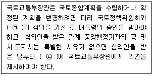
- ㉠ 국무회의, ㉡ 30일 이내
- ㉠ 국무회의, ㉡ 60일 이내
- ㉠ 국토정책홍보위원회, ㉡ 30일 이내
- ㉠ 국토정책홍보위원회, ㉡ 60일 이내
(정답률: 알수없음)
95. 환경정책기본법령상 하천의 수질 및 수생태계 환경기준 중 비소(As)의 기준값으로 옳은 것은? (단, 사람의 건강보호 기준이며, 단위는 mg/L)
- 0.5 이하
- 0.⑤ 이하
- 0.02 이하
- 검출되어서는 안 됨(검출한계 0.01)
(정답률: 알수없음)
96. 자연환경보전법령상 자연경관영향의 협의 대상이 되는 경계로부터의 거리 기준이 옳은 것은? (단, 일반기준임)
- 습지보호지역 : 500m
- 자연공원(최고봉 1200m 이상) : 1500m
- 자연공원(최고봉 700m 미만 또는 해상형) : 700m
- 생태·경관보전지역(최고봉 700m 이상) : 1000m
(정답률: 알수없음)
97. 야생생물 보호 및 관리에 관한 법령상 수렵장의 설정 제한지역이 아닌 것은? (단, 그 밖에 야생동물의 보호 등을 위하여 환경부령으로 정하는 장소는 제외한다.)
- 특별보호구역 및 보호구역
- 농묘(農畝), 사찰, 교회의 경내
- 「습지보전법」에 따라 지정된 습지보호지역
- 「국토의 계획 및 이용에 관한 법률」에 따른 농림지역
(정답률: 알수없음)
98. 자연환경보전법상 용어의 정의가 옳지 않은 것은?
- '생물다양성'이라 함은 육상생태계 및 수생생태계(해양생태계를 제외한다)와 이들의 복합생태계를 포함하는 모든 원천에서 발생한 생물체의 다양성을 말하며, 종내·종간 및 생태계의 다양성을 포함한다.
- '소(小)생태계'라 함은 생물다양성을 높이고 야생동·식물의 서식지간의 이동가능성 등 생태계의 연속성을 높이거나 특정한 생물종의 서식조건을 개선하기 위하여 조성하는 생물서식공간을 말한다.
- '자연유보지역'이라 함은 멸종위기종 야생동·식물의 서식처로서 중요하거나 생물다양성이 풍부하여 특별히 보전할 가치가 큰 지역을 말한다.
- '생태·자연도'라 함은 산·하천·내륙습지·호소(湖沼)·농지·도시 등에 대하여 자연환경을 생태적 가치, 자연성, 경관적 가치 등에 따라 등급화하여 법 규정에 따라 작성된 지도를 말한다.
(정답률: 알수없음)
99. 농지법령상 농지 소유 제한과 관련한 아래 설명에서 밑줄 친 내용에 대한 기준 기준으로 옳은 것은?
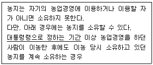
- 1년
- 3년
- 5년
- 8년
(정답률: 알수없음)
100. 야생동물 보호 및 관리에 관한 법령상 인공증식 또는 재배를 위한 포획·채취 등의 허가대상 야생생물에 해당하지 않는 것은?
- 물닭
- 세불투구꽃
- 능구렁이
- 다람쥐
(정답률: 알수없음)